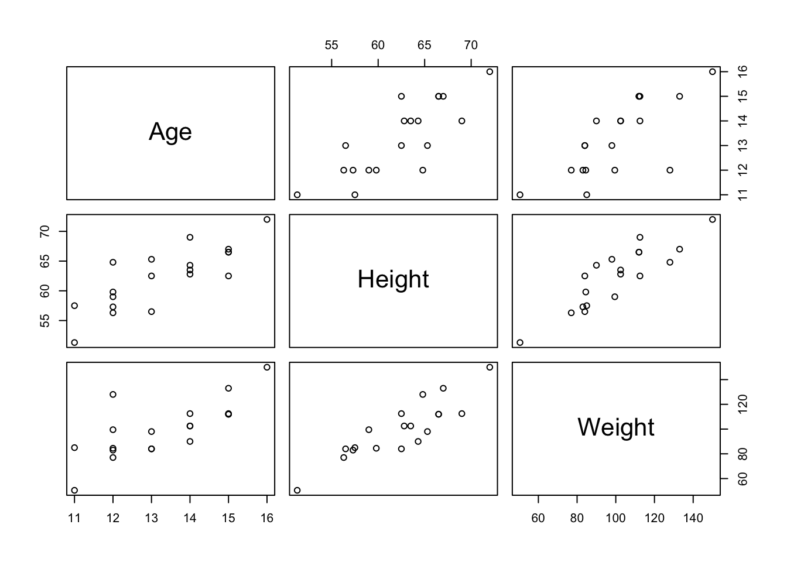
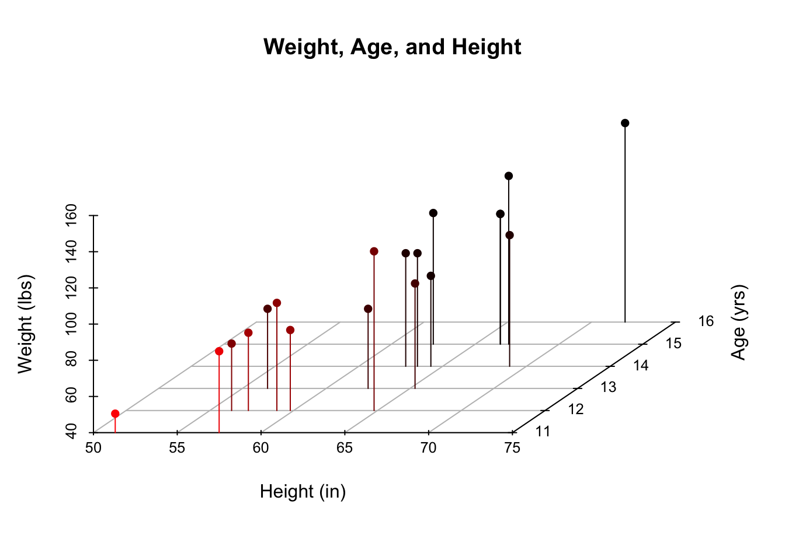
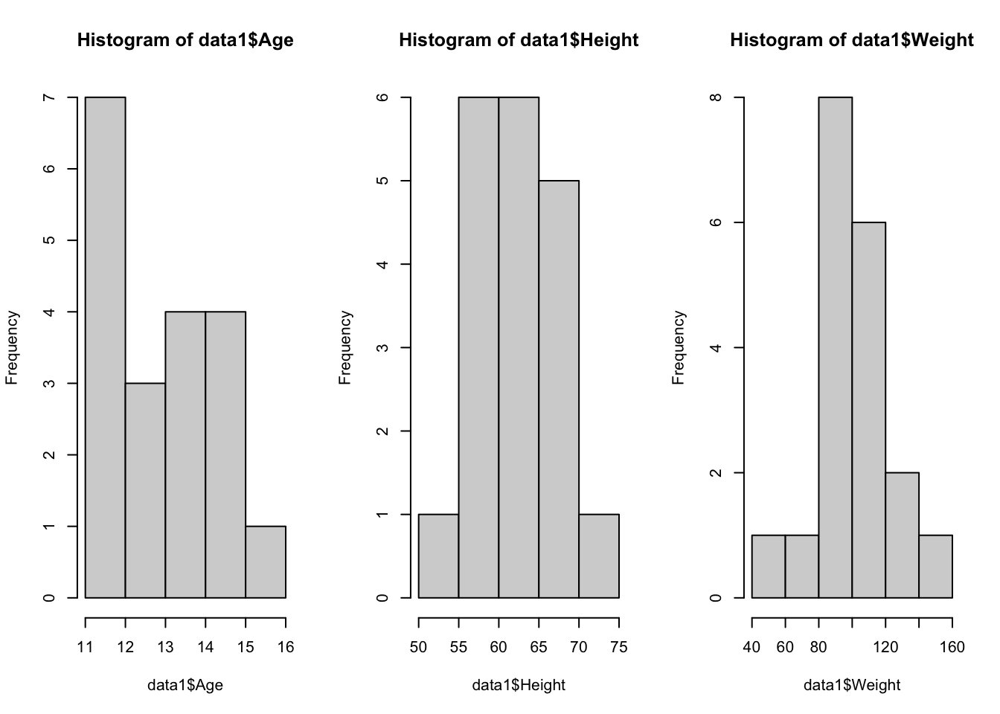
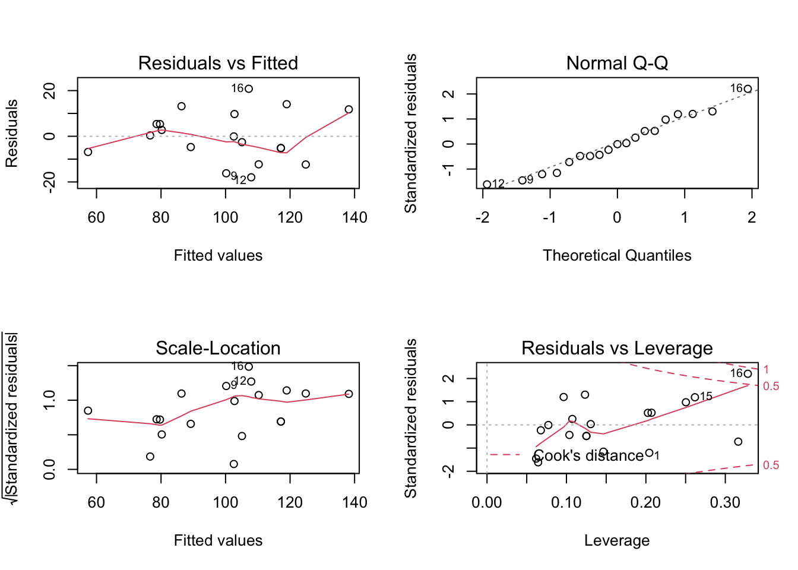

8 Multiple Regression
In this chapter we’ll use the
lm()function for fitting a multiple regression model with two continuous predictors, which will take the following forms:
\[y_i=\beta_0+\beta_1\left(X1\right)+\beta_2\left(X2\right)+\epsilon_i\] \[y_i=\beta_0+\beta_1\left(X1\right)+\beta_2\left(X2\right)+\beta_3\left(X1\ \cdot\ X2\right)+\epsilon_i\] \[y_i\ =\ \beta_0+\beta_1\left(X1\right)+\beta_2\left(X1^2\right)+\epsilon_i\]
The first equation is the unmoderated (additive) model, the second is the moderated (multiplicative) model, and the third is the nonlinear model.
The code in this chapter only works if you’re following along with the Github folder for this book (which you can download here), you’ve correctly set your working directory to the data folder (which you can learn how to do in Chapter 4), and run the code in the order it appears in this chapter.
Importing
We’ll be importing two datasets for this chapter: age_height_weight.txt and data_altitude.csv. The age_height_weight.txt file will be used for the unmoderated model, and the data_altitude.csv file will be used for the moderated and nonlinear models.
Viewing
Data for Unmoderated Model
As the name implies, the age_height_weight.txt file contains age, height, and weight data for several males and females. You can use the str() and head() functions to get the overall “impression” of the dataset.
'data.frame': 19 obs. of 5 variables:
$ Name : chr "Alfred" "Alice" "Barbara" "Carol" ...
$ Sex : chr "M" "F" "F" "F" ...
$ Age : int 14 13 13 14 14 12 12 15 13 12 ...
$ Height: num 69 56.5 65.3 62.8 63.5 57.3 59.8 62.5 62.5 59 ...
$ Weight: num 112 84 98 102 102 ...The str() function provides a lot of good information. We now know that the dataset was correctly imported as a data frame which consists of 19 observations of 5 variables, and we know the column names and column variable types. Additionally, the first few observations for each column is printed. But if you’d rather look at the dataset in a more standard format, you can use the head() function to see the first few observations:
Name Sex Age Height Weight
1 Alfred M 14 69.0 112.5
2 Alice F 13 56.5 84.0
3 Barbara F 13 65.3 98.0
4 Carol F 14 62.8 102.5
5 Henry M 14 63.5 102.5
6 James M 12 57.3 83.0We can use the plot() function to visualize the relationships between Age, Height, and Weight:

Or, you could visualize all three variables on one graph with a 3D scatterplot:
scatterplot3d(x = data1$Height, z = data1$Weight, y = data1$Age,
main = "Weight, Age, and Height",
pch = 16, highlight.3d = TRUE, type = "h", grid = TRUE, box = FALSE,
xlab = "Height (in)", ylab = "Age (yrs)", zlab = "Weight (lbs)",
angle = 55)
We can use the hist() function to visualize the distributions of Age, Height, and Weight:

The code
par(mfrow = c(2,2))above is used to print the plots as a 2 x 2 grid; theplot()function does not need to be used in conjuction with this piece of code.
And you can look at the six number summary with the summary() function:
Age Height Weight
Min. :11.00 Min. :51.30 Min. : 50.50
1st Qu.:12.00 1st Qu.:58.25 1st Qu.: 84.25
Median :13.00 Median :62.80 Median : 99.50
Mean :13.32 Mean :62.34 Mean :100.03
3rd Qu.:14.50 3rd Qu.:65.90 3rd Qu.:112.25
Max. :16.00 Max. :72.00 Max. :150.00 Data for Moderated and Nonlinear Models
The data_altitude.csv file contains data about an athlete’s baseline VO2max, BVO2, and a VO2max value where the test was conducted at some altitude, AVO2. We’ll use the str() and head() functions to view the dataset:
'data.frame': 105 obs. of 5 variables:
$ subID : int 1 2 3 4 5 6 7 8 9 10 ...
$ altitude: int 2300 2300 2500 3200 4340 2660 4300 5400 5400 5400 ...
$ BVO2 : num 74 72.4 44.6 57.3 45.1 ...
$ AVO2 : num 61.4 60 42.1 52.5 36.9 ...
$ decrease: num -12.6 -12.4 -2.5 -4.8 -8.2 ... subID altitude BVO2 AVO2 decrease
1 1 2300 74.00 61.42 -12.58
2 2 2300 72.40 60.00 -12.40
3 3 2500 44.60 42.10 -2.50
4 4 3200 57.30 52.50 -4.80
5 5 4340 45.10 36.90 -8.20
6 6 2660 44.13 38.45 -5.68More examples of viewing data can be found in Chapter 5
Formatting
Data for Moderated and Nonlinear Models
The only formatting that needs to be done is to change the unit of altitude from meters to kilometers, so that the axes have similar scales. Also, we’ll create a column that squares all of the alt_km values which will be used for the nonlinear model. To accomplish this, we can use the mutate() function which comes from the tidyverse package. Make sure the tidyverse package is loaded before running this code:
data2 <- mutate(data2, alt_km = altitude / 1000)
# Divide altitude values by 1000, and save values to new columndata2 <- mutate(data2, alt_km_sq = alt_km^2)
# Square alt_km values, and save values to a new column subID altitude BVO2 AVO2 decrease alt_km alt_km_sq
1 1 2300 74.00 61.42 -12.58 2.30 5.2900
2 2 2300 72.40 60.00 -12.40 2.30 5.2900
3 3 2500 44.60 42.10 -2.50 2.50 6.2500
4 4 3200 57.30 52.50 -4.80 3.20 10.2400
5 5 4340 45.10 36.90 -8.20 4.34 18.8356
6 6 2660 44.13 38.45 -5.68 2.66 7.0756More examples of formatting data can be found in Chapter 6
Modeling
The lm() Function
lm(formula, data, subset, weights, na.action,
method = "qr", model = TRUE, x = FALSE, y = FALSE, qr = TRUE,
singular.ok = TRUE, contrasts = NULL, offset, ...)The lm() (linear model) function is used for fitting linear models. There are many arguments for this function, but the formula and dataarguments are the only ones that need to be specified. If you’d like to learn more about functions and arguments, Chapter 2 covers basic programming concepts, including functions and arguments.
The lm() function automatically controls for shared variance, so we don’t need to take any additional steps before adding the variables to the model.
We’ll use the lm() function to make three models: an unmoderated model, a moderated model, and a nonlinear model.
Unmoderated Model
In the lm() function, the dependent variable is listed first, followed by a tilde, ~, and then the independent variable(s). The data argument is set equal to the object that contains the dataset, which in this example is the object called data1. In the unmoderated model, the addition operator, +, is used between each independent variable.
Call:
lm(formula = Weight ~ Age + Height, data = data1)
Coefficients:
(Intercept) Age Height
-141.224 1.278 3.597 The function prints out the slope and intercept for the model. To see more information about the model, the model needs to be saved as an object:
Now that we’ve saved the model as an object, called my_model, we can access a lot of information about the model. Three good functions to remember are summary(), plot(), and attributes().
Call:
lm(formula = Weight ~ Age + Height, data = data1)
Residuals:
Min 1Q Median 3Q Max
-17.962 -6.010 -0.067 7.553 20.796
Coefficients:
Estimate Std. Error t value Pr(>|t|)
(Intercept) -141.2238 33.3831 -4.230 0.000637 ***
Age 1.2784 3.1101 0.411 0.686492
Height 3.5970 0.9055 3.973 0.001093 **
---
Signif. codes: 0 '***' 0.001 '**' 0.01 '*' 0.05 '.' 0.1 ' ' 1
Residual standard error: 11.51 on 16 degrees of freedom
Multiple R-squared: 0.7729, Adjusted R-squared: 0.7445
F-statistic: 27.23 on 2 and 16 DF, p-value: 7.074e-06Now we have a nice summary print-out which includes the F-statistic, Residuals, R-squared, p-value, and more. The plot function can be used on the my_model object to view Residuals vs Fitted, Normal Q-Q, Scale-Location and Residuals vs Leverage plots.

The code
par(mfrow = c(2,2))above is used to print the plots as a 2 x 2 grid; theplot()function does not need to be used in conjuction with this piece of code.
The my_model object has attributes. Attributes can store additional information about the object, such as the model’s residuals. You can find out the attributes of an object with the attributes() function.
$names
[1] "coefficients" "residuals" "effects" "rank"
[5] "fitted.values" "assign" "qr" "df.residual"
[9] "xlevels" "call" "terms" "model"
$class
[1] "lm"The model’s attributes can be accessed by using a dollar sign, $. For example, here’s a printout of the first 5 fitted values of the model:
1 2 3 4 5
124.86856 78.62734 110.28117 102.56700 105.08492 Moderated Model
In the lm() function, the dependent variable is listed first, followed by a tilda, ~, and then the independent variable(s). The data argument is set equal to the object that contains the dataset, which in this example is the object called data2. In the moderated model, the multiplication operator, *, is used between each independent variable to indicate an interaction.
Call:
lm(formula = decrease ~ alt_km * BVO2, data = data2)
Residuals:
Min 1Q Median 3Q Max
-7.2307 -1.4511 -0.1014 1.2200 6.9343
Coefficients:
Estimate Std. Error t value Pr(>|t|)
(Intercept) 8.51588 3.01436 2.825 0.005697 **
alt_km -0.11323 1.00029 -0.113 0.910097
BVO2 -0.10874 0.05266 -2.065 0.041512 *
alt_km:BVO2 -0.07448 0.01849 -4.027 0.000109 ***
---
Signif. codes: 0 '***' 0.001 '**' 0.01 '*' 0.05 '.' 0.1 ' ' 1
Residual standard error: 2.432 on 101 degrees of freedom
Multiple R-squared: 0.8488, Adjusted R-squared: 0.8443
F-statistic: 189 on 3 and 101 DF, p-value: < 2.2e-16Nonlinear Model
In the lm() function, the dependent variable is listed first, followed by a tilda, ~, and then the independent variable(s). The data argument is set equal to the object that contains the dataset, which in this example is the object called data2. In the nonlinear model, the addition operator, +, is used between each independent variable. In this example, the independent variables are the alt_km and alt_km_sq columns.
Call:
lm(formula = decrease ~ alt_km + alt_km_sq, data = data2)
Residuals:
Min 1Q Median 3Q Max
-9.3091 -2.4191 0.9296 2.4161 7.0271
Coefficients:
Estimate Std. Error t value Pr(>|t|)
(Intercept) -2.2708 1.5327 -1.482 0.1415
alt_km -0.6921 1.0994 -0.630 0.5304
alt_km_sq -0.4532 0.1766 -2.567 0.0117 *
---
Signif. codes: 0 '***' 0.001 '**' 0.01 '*' 0.05 '.' 0.1 ' ' 1
Residual standard error: 3.687 on 102 degrees of freedom
Multiple R-squared: 0.6491, Adjusted R-squared: 0.6422
F-statistic: 94.35 on 2 and 102 DF, p-value: < 2.2e-16